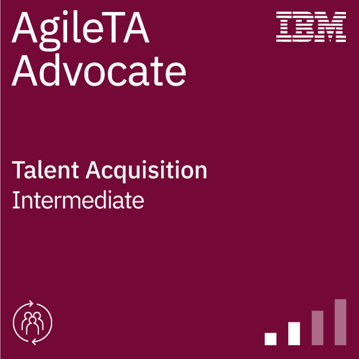

Currículum Vitae

Fabián Marcelo Trarupil Fernández
Resumen
Ingeniero en Informática de la Universidad Tecnológica de Chile con más de 2 años de experiencia y un
sólido
recorrido profesional en sectores clave como Quality Assurance y Seguridad. Poseo la capacidad
comprobada de
gestionar proyectos de tecnologías de información, aportando significativamente al proceso de
transformación
digital de las organizaciones en las que he tenido el placer de colaborar.
Datos Personales
- | Correo Electrónico --> fabian.ft1993@gmail.com
- | Teléfono de Contacto --> 9-26406253
- | Perfil LinkedIn: --> LinkedIn
- | Perfil Credly --> Credly
- | Portafolio --> Portafolio
Formación Académica
- | Ingeniería en Informática | Universidad Tecnológica de Chile | Santiago | 2011 - 2016
- | Enseñanza Media | Colegio Piamarta | Santiago | 2007 – 2010
Antecedentes Laborales
- | Control & Logic | Las Condes | Ingeniero de Proyectos | Agosto 2024 - Enero 2025 |
- | Verisure | Las Condes | Analista Técnico de Calidad | Febrero 2023 - Febrero 2024 |
- | Sonda | Santiago | QA Tester | Enero 2022-Enero 2023 |
- | IBM | Providencia | Operador de Monitoreo N2 | Febrero 2018 - Enero 2022 |
- | Ascensores Schindler | Providencia | Operador de Monitoreo N2 | Marzo 2016 - Junio 2016 |
Cursos
- | AgileTA Advocate | 
- | Exploraciones en Mindfulness |

- | Big Data Foundations |

- | Data Science Foundations |

- | Think Like a Hacker |

Información Adicional
- | Idiomas | Inglés Oral y Escrito | Nivel Intermedio |
- | Software | Networker | Excel | Nivel Intermedio |
- | Otros | Masoterapia Integral | Danza AfroLatina |